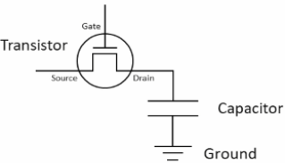
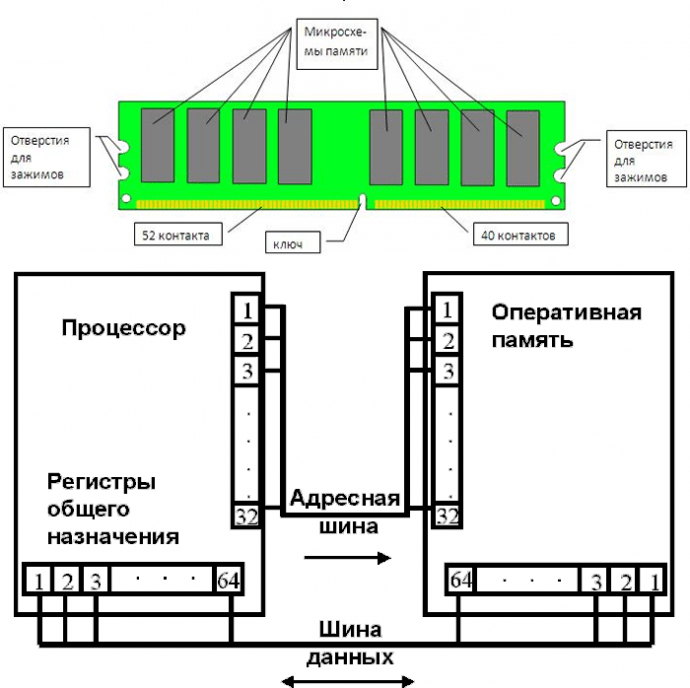
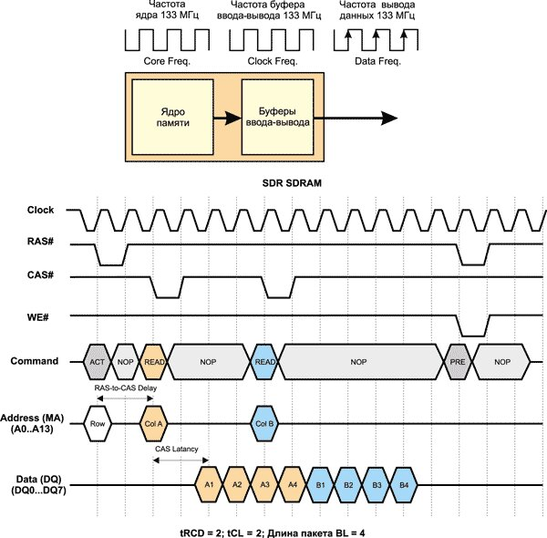
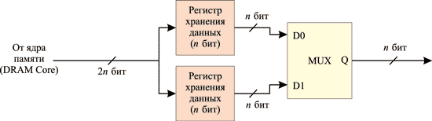
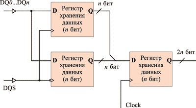
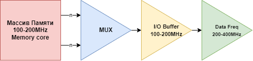
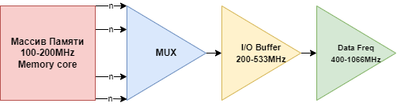
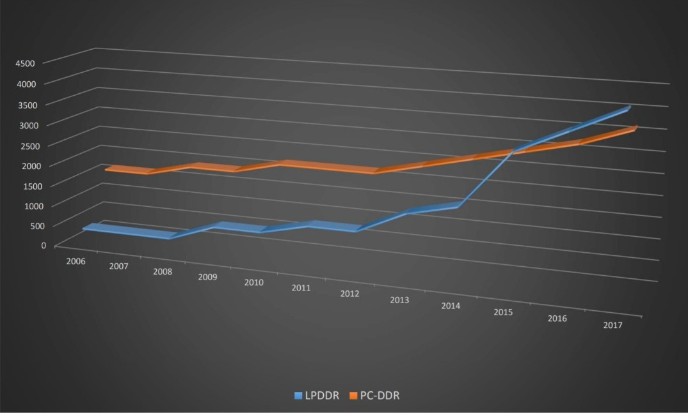

Теоретические сведения
Введение
Память в мобильных устройствах и компьютерах, как вы знаете, можно поделить на два типа. Оперативная: ОЗУ или RAM, и постоянная: ПЗУ или ROM.
Постоянная память называется энергонезависимой, то есть ПЗУ может хранить данные без подпитки энергией. Например, в флеш-памяти, которая используется в смартфонах, картах, памяти, SSD дисках и так далее — данные хранятся в Charge Trap Flash-ячейках, то есть ячейках с ловушкой заряда. Эти ловушки буквально способны запирать заряд и хранить в себе годами. Поэтому данные на SSD-диске не стираются когда вы выключаете компьютер. Также ПЗУ устройством можно назвать VHS-кассеты с магнитной лентой, CD-диски и даже перфокарты. В общем всё, что может хранить данные достаточно долго.
Оперативная память напротив — энергозависимая. То есть она способна хранить данные только при постоянной подпитке электричеством. Почему так? В оперативной памяти каждый бит данных хранится на маленьком конденсаторе. В конденсаторах есть преимущества: их можно очень плотно упаковать, а заодно можно очень быстро считывать записывать данные.
Как было сказано ранее ячейка памяти DDR всегда состоит из одного или несольких транзистеров и конденсатора, который и хранит бит информации. Процесс зарядки и разрядки кондесатора можно описать следующим образом. Транзистер имеет три точки соединения, такие как Gate(затвор), Source(Исток) и Drain(Сток). Когда напряжение попадает на Исток, ток блокируется от протекания через транзистор, но когда напряжение подаётся на затвор, ток может течь через транзистор к стоку. В таком случае транзистор служит переключателем. Для формирования яейки памяти в DDR сток подключён в конденсатору. Который представляет собой компонент, способный хранить электрический заряд. О не может хранить столько заряда как обычная батарея, однако, процесс его зарядки и разярдки намного быстрее. В свою очередь кондесатор заземлён. Вернёмся к моменту когда затвор транзистора открыт и через него може тпротекать ток, тогда конденсатор может заряжаться, это занимает несколько наносекунд. Затем затвор закрывается и протекание тока блокируется, в свою очредь конденсатор остаётся заряженным. Когда ячейка памяти остается в таком заряженном состоянии, то мы можем считать эту систему бинарной. И представить его как 1. Затем затвор проходного транзистора открывается и до тех пор пока не источнике отсутсвует напряжение направленное на конденсатор, заряд будет вытекать из него, до тех пор пока полностью не разрядится. Это разряженное состояние яейки можно представить как бинарный 0.
История
Традиционно производители памяти внедряют новую архитектуру с периодичностью в 4-5 лет. Помимо архитектуры памяти, каждые год-два изменяется и техпроцесс производства чипов памяти. Синхронная память SDRAM появилась в середине 1990-х годов. Именно тогда в массовое производство была внедрена синхронная память SDR SDRAM PC66, которая вскоре была заменена на память PC100, а затем и PC133. В 2000 году на смену памяти SDR SDRAM пришла память DDR SDRAM, отличающаяся большей пропускной способностью при меньшем энергопотреблении. Вслед за памятью DDR была внедрена память DDR2. Первоначально существовала только память DDR2-400, на смену которой довольно быстро пришла память DDR2-533. Затем появилась память DDR2-667, DDR2-800 и даже DDR2-1066. Первоначально память DDR3 была внедрена только в платформы на базе процессоров компании Intel, но позднее, в 2008 году, когда память DDR3 стала массовой и дешевой, ее также начали использовать и в системах на базе процессоров AMD.
В данный момент самым распространенным стандартом памяти является DDR4. четвёртое поколение оперативной памяти, являющееся эволюционным развитием предыдущих поколений DDR SDRAM. Отличается повышенными частотными характеристиками и пониженным напряжением питания. Основное отличие DDR4 от предыдущего стандарта DDR3 заключается в удвоенном до 16 числе внутренних банков (в 2 группах банков), что позволило увеличить скорость передачи внешней шины. Пропускная способность памяти DDR4 в перспективе может достигать 25,6 ГБ/c (в случае повышения максимальной эффективной частоты до 3200 МГц). Кроме того, повышена надёжность работы за счёт введения механизма контроля чётности на шинах адреса и команд. Изначально стандарт DDR4 определял частоты от 1600 до 2400 МГц с перспективой роста до 3200 МГц. В массовое производство вышла во 2 квартале 2014 года, сперва только ECC-память, а в следующем квартале начались продажи и не-ECC модулей DDR4, вместе с процессорами Intel Haswell-E/Haswell-EP, требующими DDR4.
Как работает оперативная память
Для начала давайте разберёмся как работает оперативная память в нашем компьютере и для чего она нужна.Ее функционирование тесно связано с CPU и информационными носителями. Данные с жесткого диска или другого накопителя первоначально попадают в оперативную память и только после их обрабатывает ЦП. Структура ОЗУ похожа на таблицу, где сперва выбирается строчка, а после — столбец. Она делится на банки — ячейки SDRAM. Например, современные варианты DDR4 отличаются от DDR3 удвоенным числом банков. За счет растет производительность. Быстрота DDR4 достигает 25,6 ГБ/c, при этом шина может функционировать на 3200 МГц.
Основные понятия
Оперативная память, или RAM-память (Random Access Memory), — это память с произвольным доступом. Поскольку элементарной единицей информации является бит, оперативную память можно рассматривать как некий набор элементарных ячеек, каждая из которых способна хранить один информационный бит. Элементарная ячейка оперативной памяти представляет собой конденсатор, способный в течение короткого промежутка времени сохранять электрический заряд, наличие которого можно ассоциировать с информационным битом. Проще говоря, при записи логической единицы в ячейку памяти конденсатор заряжается, при записи нуля — разряжается. Поскольку элементарной единицей информации для современных компьютеров является байт (8 бит), то для простоты можно считать, что элементарная ячейка памяти, которая может адресоваться, хранит не бит, а байт информации. Таким образом, доступ к памяти производится не побитно, а побайтно.
Пропускная способность — характеристика памяти, от которой зависит производительность и от которая выражает как произведение частоты системной шины на объем данных, передаваемых за такт. Однако, частота работы модуля памяти и теоретическая пропускная способность не единственные параметрами, которые отвечают за производительность системы. Не менее важную роль играет и тайминги памяти. Пропускная способность (Пиковый показатель скорости передачи данных) – это комплексный показатель возможности RAM, в нем учитывается частота передачи данных, разрядность шины и количество каналов памяти. Частота указывает потенциал шины памяти за такт – при большей частоте, можно передать больше данных. Пропускная способность (B) = Частота передачи (f) x разрядность шины (c) x количество каналов памяти(k) Вот эту формулу ты не вставил после определений пропускной способности
Тайминги
Тайминги это значения, отражающие время, за которое обрабатываются данные. Показатели
выглядят как три
числа, идущие по порядку. Каждое число — временной отрезок, который измеряется в тактах шины.
Следует разобраться с аббревиатурами CAS и RAS. Последние две буквы означают Address Strobe —
строб-сигнал адреса. Только в первом случае это про колонку (Column), а во втором — про строку (Row).
1) CAS Latency - латентность CAS. (Один из самых значимых показателей: именно он говорит,
сколько
времени в целом уходит на поиск необходимых данных после того, как ЦП попросит доступ на
считывание)
2) RAS to CAS Delay - задержка RAS to CAS. (Указывает на число тактов, которое занимает получение
доступа
к RAM и активации строки, а потом — колонки, которая содержит необходимое инфо, и команды на считывание
данных или же их запись)
3) RAS Precharge Time - время зарядки RAS. (Поскольку ОЗУ — динамическая память, ее ячейки время от
времени разряжаются и нуждаются в периодической перезарядке. По этой причине данные, которые содержатся
в ней, обновляются. Это называется регенерацией ОЗУ.
Таким образом, показатель RAS Precharge в тактах отображает временной отрезок, проходящий между сигналом
на зарядку — регенерацию ОЗУ — и разрешением на доступ к следующей строчке информации.)
Влияние
На что влияют тайминги. Если кратко — на скорость, с которой считывается информация, и быстроту инфообмена между планкой и процессором. Естественно, это воздействует и на быстроту функционирования компьютера в целом. Чем ниже тайминг, тем выше производительность, тем скорее ЦП получает доступ к банкам.
Память SDR
Разобравшись с такими важными характеристиками памяти, как ее тайминги, можно перейти непосредственно к рассмотрению принципов работы памяти. Начнем с синхронной SDRAM-памяти типа SDR (Single Data Rate), как с наиболее простой.
В SDR SDRAM-памяти обеспечивается синхронизация всех входных и выходных сигналов с положительными фронтами импульсов тактового генератора. Весь массив памяти SDRAM-модуля разделен на два независимых банка. Такое решение позволяет совмещать выборку данных из одного банка с установкой адреса в другом банке, то есть одновременно иметь две открытые страницы. Доступ к этим страницам чередуется (bank interleaving), и соответственно устраняются задержки, что обеспечивает создание непрерывного потока данных.
Наиболее распространенными типами SDRAM-памяти являлись PC100 и PC133. Цифры 100 и 133 определяют частоту системной шины в мегагерцах (МГц), которую поддерживает эта память. По внутренней архитектуре, способам управления и внешнему дизайну модули памяти PC100 и PC133 полностью идентичны.
В SDRAM-памяти организована пакетная обработка данных, что позволяет производить обращение по новому адресу столбца ячейки памяти на каждом тактовом цикле. Смысл пакетной обработки заключается в том, при активированной строке задание адреса одного столбца позволяет получить доступ сразу к последовательности нескольких столбцов (пакету столбцов) без дополнительного указания их адресов. В микросхеме SDRAM имеется счетчик для наращивания адресов столбцов ячеек памяти, чтобы обеспечить к ним быстрый доступ. Количество адресуемых таким образом столбцов называется длиной пакета (Burst Length, BL).
В SDRAM-памяти ядро и буферы обмена работают в синхронном режиме на одной и той же частоте (100 или 133 МГц). Передача каждого бита из буфера происходит с каждым тактом работы ядра памяти.Временная диаграмма работы памяти SDR SDRAM при длине пакета BL = 4 и таймингах tRCD = 2 и tCL = 2 показана на рис.
Память DDR
Память DDR SDRAM, которая пришла на смену памяти SDR, обеспечивает вдвое большую пропускную способность. Аббревиатура DDR (Double Data Rate) в названии памяти означает удвоенную скорость передачи данных. В DDR-памяти каждый буфер ввода-вывода на каждой из 64 линий шины данных передает два бита за один такт, то есть фактически работает на удвоенной тактовой частоте, оставаясь при этом полностью синхронизированным с ядром памяти. Такой режим работы возможен в случае, если эти два бита доступны буферу ввода-вывода на каждом такте работы памяти. Для этого требуется, чтобы каждая команда чтения приводила к передаче из ядра памяти в буфер ввода-вывода сразу 2n бит. С этой целью используются две независимые линии передачи от ядра памяти к буферам ввода-вывода шириной n бит каждая, откуда биты поступают на шину данных в требуемом порядке.
Реализация технологии 2n-Prefetch при операции чтения данных
Реализация технологии 2n-Prefetch при операции записи данных
Поскольку при таком способе организации работы памяти происходит предвыборка 2n бит перед передачей их на шину данных, его также называют 2n Prefetch (предвыборка 2n бит). В этой архитектуре доступ к данным осуществляется «попарно» — каждая одиночная команда чтения данных приводит к отправке по внешней шине данных двух элементов (разрядность которых, как и в SDR SDRAM, равна разрядности внешней шины данных). Аналогично каждая команда записи данных ожидает поступления двух элементов по внешней шине данных. Именно поэтому длина пакета (Burst Length, BL) при передаче данных в устройствах DDR SDRAM не может быть меньше 2.
Для того чтобы осуществить синхронизацию работы ядра памяти и буферов ввода-вывода, используется одна и та же тактовая частота (одни и те же тактирующие импульсы). Только если в самом ядре памяти синхронизация осуществляется по положительному фронту тактирующего импульса, то в буфере ввода-вывода, выполняющем функцию мультиплексора, для синхронизации используется как положительный, так и отрицательный фронт тактирующего импульса. Таким образом, передача 2n бит в буфер ввода-вывода по двум раздельным линиям осуществляется по положительному фронту тактирующего импульса, а их выдача на шину данных происходит как по положительному, так и по отрицательному фронту тактирующего импульса. Это обеспечивает вдвое более высокую скорость работы буфера и соответственно вдвое большую пропускную способность памяти.
Отличительной особенностью DDR-памяти является реализация четырех логических банков. Рассмотрим упрощенную схему работы DDR-памяти на примере операции чтения. Пусть имеется четыре банка памяти (Bank0…Bank3), длина пакета (Burst Length) равна 4, tCAS = 2 и tRCD = 3. Первоначально необходимо активировать каждый из четырех банков и получить доступ к строке в этом банке. Задержка между активацией двух банков определяется как tRRD (Row-to Row Delay) и обычно составляет 2 такта. Таким образом, через каждые два такта активизируется новый банк, а через каждые три такта после активации банка следует команда чтения данных из него.
Поскольку задержка CAS Delay составляет 2 такта, то через 2 такта после команды чтения данные могут быть считаны с шины данных. Напомним, что у нас имеется две шины данных (линии) шириной n бит каждая и передача данных может происходить параллельно по каждой из этих линий. К примеру, первое слово (n бит), соответствующее первому банку (Bank0) и первому столбцу в этом банке (A1), может быть передано по первой линии, а второе слово (A2) одновременно с первым словом — по второй линии. Далее, одновременно с передачей по первой линии слова A3, по первой линии данных может быть передано слово A4. Таким образом, по первой линии передаются данные A1, A3, B1, B3 и т.д., а по второй линии одновременно с ними — данные A2, A4, B2, B4 и т.д.
Затем эти данные передаются в мультиплексор синхронно с положительным фронтом тактового импульса и выводятся по шине шириной n бит синхронно с положительным и отрицательным фронтами.
Следующие поколения DDR
Если следовать терминологии SDR (Single Data Rate), DDR (Double Data Rate), то память DDR2 было бы логично назвать QDR (Quadra Data Rate), поскольку этот стандарт подразумевает в четыре раза большую скорость передачи, то есть в стандарте DDR2 при пакетном режиме доступа данные передаются четыре раза за один такт. Для организации данного режима работы памяти необходимо, чтобы буфер ввода-вывода (мультиплексор) работал на учетверенной частоте по сравнению с частотой ядра памяти. Достигается это следующим образом: ядро памяти, как и прежде, синхронизируется по положительному фронту тактирующих импульсов, а с приходом каждого положительного фронта по четырем независимым линиям в буфер ввода-вывода (мультиплексор) передаются 4n бита информации (выборка 4n битов за такт, 4n-Prefetch). Сам буфер ввода-вывода тактируется на удвоенной частоте ядра памяти и синхронизируется как по положительному, так и по отрицательному фронту этой частоты. Иными словами, с приходом положительного и отрицательного фронтов происходит передача битов в мультиплексном режиме на шину данных. Это позволяет за каждый такт работы ядра памяти передавать четыре слова на шину данных, то есть вчетверо повысить пропускную способность памяти.

Реализация технологии 4n-Prefetch при операции чтения данных
По сравнению с памятью DDR память DDR2 позволяет обеспечить ту же пропускную способность, но при вдвое меньшей частоте ядра. К примеру, в памяти DDR400 ядро функционирует на частоте 200 МГц, а в памяти DDR2-400 — на частоте 100 МГц. В этом смысле память DDR2 имеет значительно большие потенциальные возможности для увеличения пропускной способности по сравнению с памятью DDR. В памяти DDR2 реализована схема разбиения массива памяти на четыре логических банка, а для модулей емкостью 1 и 2 Гбайт — на восемь логических банков.
Логическая организация памяти
Полная строка ячеек памяти называется страницей, а длина её зависит от типа и конфигурации DRAM. Чем длиннее страница, тем больше в ней бит, но и тем большая электрическая мощность нужна для её работы; короткие страницы потребляют меньше мощности, но и содержат меньший объём данных.
Однако нужно учитывать и ещё один важный фактор. При считывании и записи на чип DRAM первым этапом процесса является активация всей страницы. Строка битов (состоящая из нулей и единиц) хранится в буфере строки, который по сути является набором усилителей считывания и защёлок, а не дополнительной памятью. Затем активируется соответствующий столбец для извлечения данных из этого буфера.
Если страница слишком мала, то чтобы успеть за запросами данных, строки нужно активировать чаще; и наоборот — большая страница предоставляет больше данных, поэтому активировать её можно реже. И даже несмотря на то, что длинная строка требует большей мощности и потенциально может быть менее стабильной, лучше стремиться к получению максимально длинных страниц.
Если собрать вместе набор страниц, то мы получим один банк памяти DRAM. Как и в случае страниц, размер и расположение строк и столбцов ячеек играют важную роль в количестве хранимых данных, скорости работы памяти, энергопотреблении и так далее.
Например, схема может состоять из 4 096 строк и 4 096 столбцов, при этом полный объём одного банка будет равен 16 777 216 битам или 2 мегабайтам. Но не у всех чипов DRAM банки имеют квадратную структуру, потому что длинные страницы лучше, чем короткие. Например, схема из 16 384 строк и 1 024 столбцов даст нам те же 2 мегабайта памяти, но каждая страница будет содержать в четыре раза больше памяти, чем в квадратной схеме.
Все страницы в банке соединены с системой адресации строк (то же относится и к столбцам) и они контролируются сигналами управления и адресами для каждой строки/столбца. Чем больше строк и столбцов в банке, тем больше битов должно использоваться в адресе.
Для банка размером 4 096 x 4 096 для каждой системы адресации требуется 12 бит, а для банка 16 384 x 1 024 потребуется 14 бит на адреса строк и 10 бит на адреса столбцов. Стоит заметить, что обе системы имеют суммарный размер 24 бита.

Если бы чип DRAM мог предоставлять доступ к одной странице за раз, то это было бы не особо удобно, поэтому в них упаковано несколько банков ячеек памяти. В зависимости от общего размера, чип может иметь 4, 8 или даже 16 банков — чаще всего используется 8 банков.
Все эти банки имеют общие шины команд, адресов и данных, что упрощает структуру системы памяти. Пока один банк занят работой с одной командой, другие банки могут продолжать выполнение своих операций.
Весь чип, содержащий все банки и шины, упакован в защитную оболочку и припаян к плате. Она содержит электропроводники, подающие питание для работы DRAM и сигналов команд, адресов и данных.
Графическая память GDDR
Как известно, оперативная память применяется для нужд не только центрального процессора, но и графического процессора. В современных графических видеокартах используется так называемая графическая память, микросхемы которой распаиваются на плате графической карты. Аналогично тому, что существуют различные типы оперативной памяти (SDR, DDR, DDR2, DDR3, DDR4), графическая память тоже бывает разной. Для того чтобы отличать оперативную память от графической памяти, последнюю снабжают обозначением «G». Так, бывает память GDDR2, GDDR3,GDDR4, GDDR5, GDDR6. Несмотря на схожие названия (GDDR2 и DDR2, GDDR3 и DDR3), графическая память существенно отличается от оперативной памяти.
Отметим, что впервые графическая память GDDR2 (Graphics Double Data Rate, version 2) была использована компанией NVIDIA в видеокарте на базе процессора GeForce FX 5800. В то же время по принципу действия графическая память GDDR2 не имеет ничего общего с памятью DDR2 и в этом смысле более схожа с памятью DDR. В частности, в памяти GDDR2 не используется технология 4n-Prefetch, когда буфер ввода-вывода данных работает на удвоенной частоте. От обычной DDR-памяти память GDDR2 отличается более высокими тактовыми частотами, требованиями к напряжению и способами терминирования сигналов.
GDDR3 - электрические отличия от GDDR2 носят принципиальный характер и заключаются в наличии внутренней терминации и других усовершенствований, но к DDR3 эта память никакого отношения не имеет, поскольку по прежнему осуществляется четырёхкратная внутренняя предвыборка подобно DDR2 (т.е. сами ячейки памяти работают на вчетверо меньшей частоте, чем эффективная частота передача данных, а тактовая частота интерфейса (которую обычно и считают тактовой частотой памяти) соответственно вдвое меньше этой частоты (также аналогично "обычной" DDR2).
GDDR4 - отличается от GDDR3 в первую очередь наличием восьмикратной предвыборки, подобно «обычной» DDR3, и, следовательно, способностью работать на ещё больших тактовых частотах при одинаковой технологии изготовления. В настоящее время данный тип памяти практически снят с производства и заменён GDDR5. Применялся ограниченно и только в видеокартах ATI, в первую очередь - в Radeon HD3870.
GDDR5 - самый распространенный современный и быстрый тип видеопамяти, радикальное отличие от GDDR4 заключается в раздельном тактировании линий передачи данных и адресов: - команды передаются в режиме SDR (стандартная тактовая частота) на частоте CK, - адреса передаются в режиме DDR (Double Data Rate) на частоте CK, - данные передаются в режиме DDR на частоте WCK (которая в 2 раза выше CK), т.е. за один такт такая память передает 2 бита адресов и 4 бита данных
Устройство GDDR5 имеет сверхвысокую пропускную способность по сравнению с другими популярными стандартами DRAM . Когда устройство было представлено, системы на базе GDDR5 работали со скоростью 3,6 Гбит/с. С тех пор скорость передачи данных увеличилась примерно до 7 Гбит / с в основных графических и игровых консольных приложениях и 8 Гбит / с в высокопроизводительных системах. Например, один GDDR5 может считывать или записывать данные, эквивалентные пяти DVD-дискам (по 4,7 ГБ каждый) за доли секунды при работе со скоростью 8 Гбит/с на контакт или 32 ГБ/с на устройство.
GDDR5 в настоящее время является зрелой технологией, поскольку скорость передачи данных насыщена до 8 Гбит / с. GDDR5 будет оставаться на рынке в течение многих лет. Для будущих приложений, требующих еще более высокой пропускной способности памяти, Micron предлагает SRAM GDDR6, которые удваивают скорость передачи данных на контакт до 16 Гбит / с.

GDDR5 сочетает в себе надежную несимметричную сигнализацию с улучшениями в системе синхронизации, которые преодолевают ограничения скорости в предыдущих поколениях устройств графической памяти. Эти усовершенствования позволяют отрасли постоянно увеличивать скорость передачи данных систем на базе GDDR5 с каждым новым поколением продуктов.
.png)
Устройство использует высокоуровневое завершение для команд, адресов и данных. Это приводит к значительной экономии энергии по сравнению с системами среднего уровня. Он работает от источника питания 1,5 В или 1,35 В в зависимости от скорости передачи данных и предпочтений приложения.
Интерфейс устройства предназначен для систем с 32-разрядным каналом ввода-вывода, в результате чего за цикл памяти передается 32 байта данных. Системы могут охватывать от 64-разрядного ввода-вывода (два канала памяти) для систем начального уровня до 512-разрядного ввода-вывода (16 каналов памяти) для высокопроизводительных систем.
Добавление дополнительных модулей DIMM к каналам памяти является традиционным способом увеличения плотности памяти в приложениях для ПК и серверных приложений. Однако эти двухранговые конфигурации могут привести к снижению производительности в результате топологии сигналов двойной нагрузки. GDDR5 использует однонагруженную или двухточечную (P2P) шину данных для достижения наилучшей производительности. Устройства GDDR5 всегда непосредственно паяны на печатной плате и не монтируются на модуле DIMM. Каждое устройство поддерживает режим x32 и режим раскладушки x16, и режим устанавливается при включении питания. В режиме x16 шина данных разделена на две шины шириной 16 бит, которые маршрутизируются отдельно на каждое устройство. Контакты адресов и команд совместно используются двумя устройствами для сохранения общего количества контактов ввода-вывода на контроллере. Однако эта топология P22P не снижает производительность системы из-за более низкой скорости передачи данных адресной или командной шины.
GDDR6
6-е поколение памяти DDR SDRAM, спроектированной для обработки графических данных и для приложений, требующих более высокой рабочей частоты. GDDR6 является графическим решением следующего поколения при разработке стандартов в JEDEC и может работать до двух раз быстрее, чем GDDR5, при этом её рабочее напряжение снижено на 10%. Также одной из отличительных особенностей новой памяти является работа каждой микросхемы в двухканальном режиме. JEDEC и три его крупных участника в лице Samsung, SK Hynix и Micron позиционируют стандарт GDDR6 в качестве преемника GDDR5 и GDDR5X, и NVIDIA подтвердила, что чипы Turing будут его поддерживать. В зависимости от производителя, GDDR6 первого поколения, как правило, позволяет развивать до 16 Гбит/с на единицу полосы пропускания, что вдвое больше, чем у GDDR5 и на 40 %, чем у GDDR5X в картах NVIDIA (ускорители Quadro будут использовать модули Samsung на 14 Гбит/с). Новые графические процессоры и основанные на них карты Quadro также являются первыми продуктами NVIDIA, которые получили видеопамять стандарта GDDR6 (до 48 Гбайт, вдвое больше, чем в Quadro P6000) и одновременно значительно увеличили полосу пропускания.
GDDR6 поддерживает одну и ту же 16n предварительную выборку как и у GDDR5X, но логически разбивает 32-битный интерфейс данных на два 16-битных канала A и B (для увеличения объема памяти 32-х разрядного канала GDDR5 можно было использовать 2-е микросхемы GDDR5 в режиме х16 , а в GDDR6 они в одной двухканальной микросхеме).
Эти два канала GDDR6 полностью независимы друг от друга. Для каждого канала запись или чтение доступ к памяти - 256 бит или 32 байта. Преобразователь с параллельным последовательным преобразованием преобразует каждый 256-битный пакет данных в шестнадцать 16-битных слов данных, которые передаются последовательно по 16-разрядной шине данных (из-за этой 16n предварительной выборки с GDDR6, то же время цикла внутреннего массива 1ns равно скорость передачи данных 16 Гбит/с).Двухканальный режим работы GDDR6 позволяет разработчикам контроллеров, знакомым с GDDR5 рассматривать одно устройство GDDR6 просто как два устройства GDDR5.
В этом случае каждый 16-битный канал обеспечивает такую же 32-байтную доступность, как и одно 32-разрядное устройство GDDR5.
LPDDR
Итак, DDR — память быстрая-прекрасная, но, так как вы помните, что конденсаторы нужно постоянно подзаряжать эта память расходует очень много энергии. И если для стационарных устройств это проблема решаемая, то для мобильных — критическая. Поэтому в 2006 году появилась новая разновидность DDR-памяти — LPDDR. Она отличалась пониженным напряжением питания с 2,5 В до 1,8 В, отсюда и название Low Power DDR. Также была уменьшена площадь чипа. Уменьшенное потребление энергии удалось достичь благолдаря двум факторам. На низких температурах заряд из памяти утекает медленнее, поэтому, если сильно память не нагружать, то можно увеличить интервалы обновления наших конденсаторов. Добавили режим Deep Power Down, режим глубокого сна, в котором из памяти стирается абсолютно всё.
Однако такая оптимизация негавтино повлияла на скорость работы памяти.Но стандарт быстро развивался и сейчас энергоэффективная память уже в некотрых аспектах предпочтительнее своего старшего брата. Рассммотрим LPDDR4, самый распространенный из типов Low Power. LPDDR4 — это мобильный эквивалент памяти DDR4. По сравнению с DDR4 она предлагает меньшее энергопотребление за счет пропускной способности. LPDDR4 имеет два 16-битных канала, что дает 32-битную общую шину на каждый модуль DIMM. Для сравнения, DDR4 имеет один 64-битный канал на модуль DIMM. LPDDR4 компенсирует это, принимая более широкую предварительную выборку 16n, что в сумме составляет (16 слов x 16 бит) 256 бит/32 байта на канал, что вдвое больше для обоих каналов вместе взятых. LPDDR4 также имеет более гибкую длину пакета от 16 до 32 (256 или 512 бит, 32 или 64 байта), хотя в основном используется 16 BL. DDR4, с другой стороны, ограничен длиной пакета 8 за цикл (128 бит или 16 байт), хотя каждый банк может выполнять дополнительные передачи.
Такая конструкция делает LPDDR4 гораздо более энергоэффективной по сравнению со стандартной памятью DDR4, что делает ее идеальной для использования в смартфонах с временем автономной работы до 8-10 часов. Оперативная память Micron LPDDR4 превосходит стандарт с тактовой частотой 2133 МГц для скорости передачи 4266 МТ/с, в то время как Samsung следует чуть позже с тактовой частотой 1600 МГц и скоростью передачи 3200 МТ/с. Кроме того, как вы можете видеть в таблицах ниже (из Википедии), LPDDR4 (1,1 В) имеет гораздо более низкое напряжение, чем DDR4 (1,3 В), несмотря на аналогичные или более высокие частоты шины ввода-вывода.
Наконец, есть вопрос о банках памяти. Еще раз, LPDDR4 оптимизирован для низкого энергопотребления, в то время как для памяти DDR4 верно обратное. В то время как память DDR4 состоит из групп банков по 16, каждая из которых содержит четыре отдельных банка памяти, модули DIMM LPDDR4 и LPDD4X имеют в общей сложности восемь банков памяти на канал , в результате чего общее количество составляет шестнадцать (16 бит x 2).
LPDDR5 DRAM поддерживает динамическое конфигурирование количества используемых банков для установки необходимого числа транзакций чтения или записи в режиме Burst в зависимости от паттернов данных, с которыми предстоит работать. Доступны следующие конфигурации:
1. Режим групп банков (Bank-group, BG) – 4 группы по 4 банка в каждой. Данный режим оптимален при работе на скоростях выше 3 200 Мбит / с. Число транзакций в режиме Burst – 16 или 32.
2. Режим «8 банков». Данная конфигурация памяти может быть использована для любых скоростей передачи данных. Число транзакций в режиме Burst – 32.
3. Режим «16 банков». Применяется для скоростей обмена до 3 200 Мбит / с. Число транзакций в режиме Burst – 16 или 32.
Список использованных источников
1. Advantages Of LPDDR5: A New Clocking Scheme [Электронный ресурс]. URL: https://semiengineering.com/advantages-of-lpddr5-a-new-clocking-scheme/
2. LPDDR4: What Makes It Faster and Reduces Power Consumption | Synopsys [Электронный ресурс]. URL: https://blogs.synopsys.com/vip-central/2017/09/05/lpddr4-what-makes-it-faster-and-reduces-power-consumption/
3. DDR4 Basics [Электронный ресурс]. URL: https://www.systemverilog.io/ddr4-basics
4. LPDDR5: Enhancements in Bandwidth, Reliability, and Power for IoT, AI, and Image Processing | Synopsys [Электронный ресурс]. URL: https://blogs.synopsys.com/vip-central/2018/02/22/lpddr5-enhancements-in-bandwidth-reliability-and-power-for-iot-ai-and-image-processing/
5. DDR4 vs GDDR6 Memory: Which One is Faster? | Page 2 of 2 | Hardware Times [Электронный ресурс]. URL: https://www.hardwaretimes.com/ddr4-vs-gddr6-memory-which-one-is-faster/2/
6. LPDDR4 vs DDR4 vs LPDDR4x: Which One is Better? | Hardware Times [Электронный ресурс]. URL: https://www.hardwaretimes.com/lpddr4-vs-ddr4-vs-lpddr4x-which-one-is-better/
7. DDR5 vs. DDR6: Here’s What to Expect in RAM Modules | Blogs [Электронный ресурс]. URL: https://resources.altium.com/p/ddr5-vs-ddr6-heres-what-expect-ram-modules
8. Ультратонкие ноутбуки для корпоративных пользователей – с памятью LPDDR4x [Электронный ресурс]. URL: https://ru.msi.com/blog/ultra-thin-business-and-productivity-laptop-with-lpddr4x-memory
9. Динамическая оперативная память — “Все о Hi-Tech” [Электронный ресурс]. URL: http://all-ht.ru/inf/pc/mem_dram.html
10. “Q” бывают разные: обзор технологий памяти QDR и QBM [Электронный ресурс]. URL: https://overclockers.ru/hardnews/show/10981/q-byvajut-raznye-obzor-tehnologij-pamyati-qdr-i-qbm
11. Модификация данных в видеопамяти - Разработка электрической схемы макета для исследований работы видеопамяти [Электронный ресурс]. URL: https://studbooks.net/2338909/tehnika/modifikatsiya_dannyh_videopamyati
12. Чем отличаются поколения видеопамяти | Видеокарты | Блог | Клуб DNS [Электронный ресурс]. URL: https://club.dns-shop.ru/blog/t-99-videokartyi/32110-chem-otlichautsya-pokoleniya-videopamyati/
13. В чем разница между оперативной памятью DDR2, DDR3 и DDR4? - gadgetshelp,com [Электронный ресурс]. URL: https://gadgetshelp.com/tekhnologiia-obiasnil/v-chem-raznitsa-mezhdu-operativnoi-pamiatiu-ddr2-ddr3-i-ddr4/
14. Энциклопедия современной памяти | КомпьютерПресс [Электронный ресурс]. URL: https://compress.ru/article.aspx?id=16737
15. Тайминги оперативной памяти: что это, как поменять — гайд в 4 разделах [Электронный ресурс]. URL: https://www.moyo.ua/news/chto-takoe-taymingi-v-operativnoy-pamyati-kakie-luchshe-likbez-v-4-razdelakh.html
16. Назначение сигналов и контактов микросхем памяти GDDR5. [Электронный ресурс]. URL: http://al-tm.ru/stati/monitoram/naznachenie-signalov-i-kontaktov-mikrosxem-pamyati-gddr5
17. Интерфейс видеокарты PCI Express: PCIe 4.0, PCIe 5.0, PCIe 6.0 [Электронный ресурс]. URL: https://hardwareguide.ru/%D0%B2%D0%B8%D0%B4%D0%B5%D0%BE%D0%BA%D0%B0%D1%80%D1%82%D0%B0/pci-express/
18. Блок-схема и принцип работы графического видеоадаптера agp. [Электронный ресурс]. URL: https://studfile.net/preview/2014403/page:13/